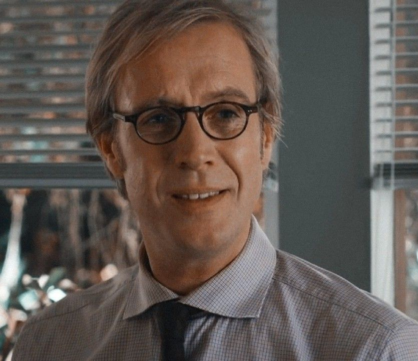
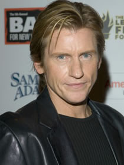

Elenco Principal




Em 2012, Andrew Garfield estreou como Peter Parker em uma reinvenção moderna do herói aracnídeo. O filme explora as origens do Homem-Aranha com uma abordagem mais realista e emocional, focando na jornada de Peter para descobrir os segredos do passado de sua família enquanto enfrenta o perigoso Lagarto.
O Espetacular Homem-Aranha acompanha Peter Parker (Andrew Garfield), um estudante do ensino médio que foi abandonado por seus pais quando criança, sendo criado por seu Tio Ben (Martin Sheen) e Tia May (Sally Field). Peter está em busca de entender o desaparecimento de seus pais, levando-o a descobrir a maleta de seu pai.
Enquanto investiga os segredos de sua família, Peter é picado por uma aranha geneticamente modificada e adquire poderes extraordinários. Inicialmente, ele os usa para sua vantagem pessoal, mas após a trágica morte de seu tio Ben, Peter aprende a lição de que "com grandes poderes vêm grandes responsabilidades".
Ele então decide usar seus poderes para proteger a cidade de Nova York como o Homem-Aranha, enquanto enfrenta o Dr. Curt Connors (Rhys Ifans), seu antigo mentor que se transforma no perigoso Lagarto. Paralelamente, Peter desenvolve um romance com sua colega de escola, Gwen Stacy (Emma Stone), filha do capitão de polícia George Stacy (Denis Leary).
Dirigido por Marc Webb, conhecido por "(500) Dias com Ela". Webb trouxe uma sensibilidade única para o romance entre Peter e Gwen.
Estreou em 3 de julho de 2012 nos EUA. O filme marcou o reinício da franquia apenas 5 anos após a trilogia de Sam Raimi.
Arrecadou US$ 757,9 milhões mundialmente, superando as expectativas e garantindo uma sequência.
Indicado ao Oscar de Melhores Efeitos Visuais. Venceu o People's Choice Award de Filme de Ação Favorito.
Diferente da trilogia anterior, Peter cria seus próprios web-shooters, sendo mostrado como um inventor talentoso desde o início.
Garfield interpreta um Peter menos deslocado socialmente, com características mais confiantes e um estilo único.
Pela primeira vez no cinema, Gwen Stacy é o interesse romântico principal, em vez de Mary Jane Watson.
A trama explora profundamente o mistério por trás do desaparecimento dos pais de Peter, um elemento pouco explorado anteriormente.
O Espetacular Homem-Aranha foi recebido com críticas geralmente positivas, com elogios direcionados à química entre Andrew Garfield e Emma Stone, às sequências de ação e à abordagem mais fiel aos quadrinhos em certos aspectos.
O filme estabeleceu um tom mais sombrio e realista para a franquia, explorando temas de perda, responsabilidade e amadurecimento de forma mais profunda. A performance de Garfield foi particularmente elogiada por capturar tanto a vulnerabilidade de Peter Parker quanto a sagacidade do Homem-Aranha.
Embora tenha sido sucedido por apenas uma sequência antes do personagem ser integrado ao MCU, a versão de Garfield deixou uma marca duradoura nos fãs, que posteriormente celebraram seu retorno em "Homem-Aranha: Sem Volta para Casa".